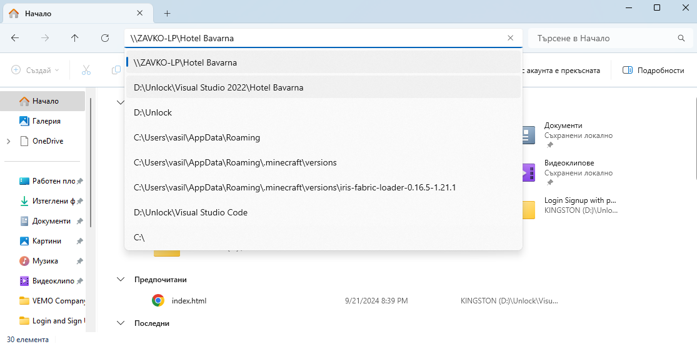
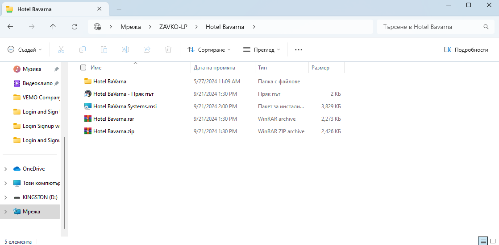
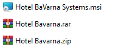
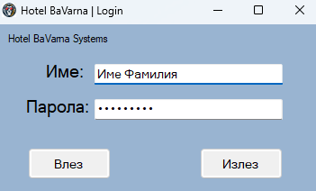

Как да се свържем в интернет сървъра на Hotel BaVarna Systems.
*Преди да започнем този сървър е достъпен само до работниците на Hotel BaVarna!*
Първо трябва да отворите вашият файлов мениджър [File Explorer]
След това във търсачката, напишете "\\ZAVKO-LP\Hotel Bavarna"
Много рядко се оказва да се използва "\\ZAVKO-PC\Hotel Bavarna"

Като напишете текста в полето и натиснете "Enter" ще ви излезне това:

Файловете, които ще видите под този текст не е задължително да отваряте:
*Не ги отваряйте има бъг в системата*

Сега за да влезете в приложението трябва да отворите този файл:
Вече сте готови! Може да влезнете в акаунта си и да започнете работа!
Как изглежда Login екрана:

Copyright® VEMO Ltd.© All rights deserved!